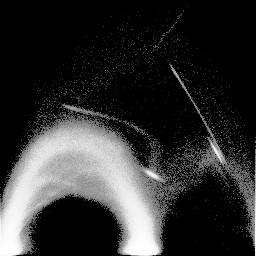
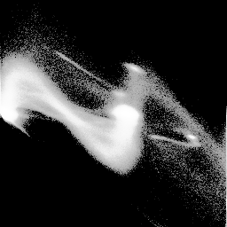
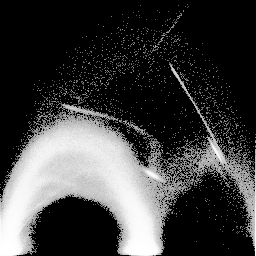
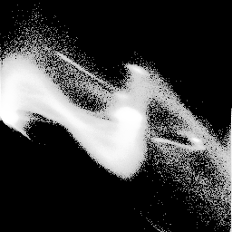
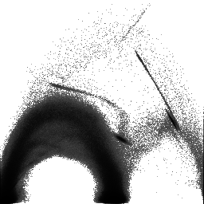
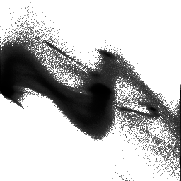

Information for creating scatterplots is seen from running "gkms scat":Right now the "gamma" option is the only interesting variable; it controls how bright or dark the scatterplots will be. Running with the default setting:usage: bin/gkms scat [-g <gamma>] <hvolIn> <VGout> <VHout> Default values are in {}s -g gamma : gamma used to brighten scatterplot (gamma > 1 makes image brighter; gamma < 0 inverts everthing {1.4} hvolIn : histogram volume being analyzed VGout VHout: the value-gradient and value-2ndDerivative scatterplot images to be created (PGM format)produces:gkms scat engine-hvol.nrrd engine-vg.pgm engine-vh.pgmThese are the sorts of scatterplots that I made at the beginning of my MS thesis research (in 1995), after I had decided that making histogram volumes was useful, but before I'd come up with a way of analyzing them. In both of them, the scalar data value is the horizontal axis, and the derivative value (gradient magnitude in VG, and second directional derivative in gradient direction in VH) on the vertical axis. The ability to glean information from these scatterplots is not immediate; reading this section and this section from my MS thesis may be helpful.
  engine-vg.pgm engine-vh.pgm We could stand to make the scatterplots brighter- the top-most arch in the VG scatterplot is quite faint ...
gkms scat -g 3.0 engine-hvol.nrrd engine-vg-g3.pgm engine-vh-g3.pgm
  engine-vg-g3.pgm engine-vh-g3.pgm If you want to print the scatterplot somewhere, it is probably best to invert it so that the fine points don't get lost in black toner:
gkms scat -g -3.0 engine-hvol.nrrd engine-vg-inv.pgm engine-vh-inv.pgmUsing a negative gamma gives you the same result as using a positive gamma, and then inverting the image.
  engine-vg-inv.pgm engine-vh-inv.pgm The scatterplots are informative because, in part, of a histogram equalization which is done on the scatterplot image so that the different gray levels are better utilized. This is followed by the gain. These two operations are done by nrrd's nrrdHistoEq() and nrrdArithGamma() functions, respectively. This section of my MS thesis describes that process.